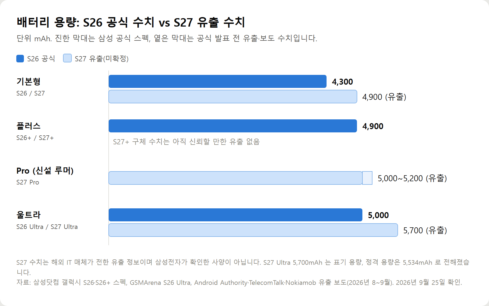

<meta charset="utf-8">
<title>갤럭시 S27 스펙 요약 — 출시일·칩·배터리 유출 정리 — 나의 투자 그리고 행복한 여행</title>
<meta name="description" content="갤럭시 S27 스펙은 아직 미발표입니다. 2027년 1분기 공개 전망, 울트라 5,700mAh 배터리설과 엑시노스 2700 병행설, S26 출고가 기준 가격 전망을 정리했습니다.">
<meta name="viewport" content="width=device-width, initial-scale=1">
<link rel="canonical" href="https://worldtraveler1.tistory.com/115">
<link rel="preconnect" href="https://fonts.googleapis.com">
<link rel="preconnect" href="https://fonts.gstatic.com" crossorigin>
<link rel="stylesheet" href="https://fonts.googleapis.com/css2?family=Hahmlet:wght@400;600;800&family=IBM+Plex+Mono:wght@400;500&family=IBM+Plex+Sans+KR:wght@300;400;500;600&display=swap">

<style>
  :root{
    --paper:#F2EEE6;--surface:#FAF8F3;--surface-2:#E7E1D5;
    --ink:#191510;--ink-2:#4A4235;--ink-3:#7D7364;
    --line:#D6CEBF;--line-soft:#E4DDD0;--accent:#B06A15;--accent-bright:#C2761A;
    --up:#E5484D;--down:#3B82F6;
    --f-display:"Hahmlet",'Nanum Myeongjo',"Apple SD Gothic Neo",serif;
    --f-body:"IBM Plex Sans KR","Apple SD Gothic Neo","Malgun Gothic",sans-serif;
    --f-mono:"IBM Plex Mono","SFMono-Regular",Consolas,monospace;
    --pad:clamp(20px,5vw,64px);
  }
  @media (prefers-color-scheme:dark){
    :root:not([data-theme="light"]){
      --paper:#0B1120;--surface:#121A2C;--surface-2:#1A2439;
      --ink:#E9EEF7;--ink-2:#A9B5C9;--ink-3:#72809A;
      --line:#26314A;--line-soft:#1D2739;--accent:#E8A33D;--accent-bright:#F0B45C;
    }
  }
  *{box-sizing:border-box;}
  body{margin:0;background:var(--paper);color:var(--ink);font-family:var(--f-body);
    font-weight:300;font-size:1rem;line-height:1.75;-webkit-font-smoothing:antialiased;}
  a{color:inherit;}
  img{max-width:100%;height:auto;}
  .wrap{max-width:760px;margin:0 auto;padding-inline:var(--pad);}
  .nav{position:sticky;top:0;z-index:20;background:color-mix(in srgb,var(--paper) 88%,transparent);
    backdrop-filter:saturate(180%) blur(12px);border-bottom:1px solid var(--line);}
  .nav-in{display:flex;align-items:center;justify-content:space-between;height:58px;}
  .brand{font-family:var(--f-display);font-weight:600;font-size:1rem;letter-spacing:-.02em;text-decoration:none;}
  .back{font-family:var(--f-mono);font-size:.72rem;color:var(--ink-3);text-decoration:none;}
  .article{padding-block:clamp(40px,7vw,72px) clamp(56px,9vw,96px);}
  .eyebrow{font-family:var(--f-mono);font-size:.68rem;letter-spacing:.16em;text-transform:uppercase;
    color:var(--accent);margin:0 0 14px;}
  h1{font-family:var(--f-display);font-weight:800;font-size:clamp(1.6rem,4.4vw,2.3rem);
    line-height:1.3;letter-spacing:-.03em;margin:0 0 16px;}
  .byline{font-family:var(--f-mono);font-size:.72rem;color:var(--ink-3);
    padding-bottom:24px;border-bottom:1px solid var(--line);margin-bottom:32px;}
  h2{font-family:var(--f-display);font-weight:600;font-size:1.25rem;letter-spacing:-.02em;margin:42px 0 14px;}
  h3{font-family:var(--f-display);font-weight:600;font-size:1.05rem;letter-spacing:-.02em;
    margin:30px 0 10px;padding-top:14px;border-top:1px solid var(--line-soft);}
  h3 .code{font-family:var(--f-mono);font-size:.7rem;font-weight:400;color:var(--ink-3);margin-left:6px;}
  p{margin:0 0 18px;color:var(--ink-2);}
  ul.checks{margin:0 0 18px;padding-left:20px;color:var(--ink-2);}
  ul.checks li{margin-bottom:8px;font-size:.94rem;}
  table{width:100%;border-collapse:collapse;font-size:.88rem;margin-bottom:8px;}
  th{font-family:var(--f-mono);font-size:.66rem;letter-spacing:.06em;text-transform:uppercase;
    color:var(--ink-3);text-align:right;padding:8px 6px;border-bottom:1px solid var(--line);}
  th:first-child{text-align:left;}
  td{padding:10px 6px;border-bottom:1px solid var(--line-soft);color:var(--ink-2);}
  td.num{font-family:var(--f-mono);text-align:right;font-variant-numeric:tabular-nums;}
  td.up{color:var(--up);} td.down{color:var(--down);}
  .scroll{overflow-x:auto;}
  figure{margin:22px 0;}
  figure img{display:block;border-radius:3px;background:var(--surface-2);}
  figcaption{margin-top:8px;font-family:var(--f-mono);font-size:.68rem;color:var(--ink-3);text-align:center;}
  .note{margin-top:34px;padding:16px 18px;border-left:3px solid var(--accent);
    background:var(--surface);border-radius:0 3px 3px 0;}
  .note p{margin:0;font-size:.85rem;color:var(--ink-3);}
  .foot{border-top:1px solid var(--line);background:var(--surface);padding-block:30px 38px;}
  .foot p{margin:0;font-size:.8rem;color:var(--ink-3);}
</style>

<nav class="nav">
  <div class="wrap nav-in">
    <a class="brand" href="../index.html">나의 투자 그리고 행복한 여행</a>
    <a class="back" href="../index.html#stocks">← 시황으로</a>
  </div>
</nav>

<main class="wrap article">
  <p class="eyebrow">Market</p>
  <h1>갤럭시 S27 스펙 요약 — 출시일·칩·배터리 유출 정리</h1>
  <p class="byline">생활 · 2026-09-25 기준</p>

  <p><b>이 포스팅은 쿠팡 파트너스 활동의 일환으로, 이에 따른 일정액의 수수료를 제공받습니다.</b></p>
  <p>한 줄 요약: 갤럭시 S27은 2027년 1분기 공개가 유력하고, 울트라는 배터리 5,700mAh 설과 국내 엑시노스 2700 병행설이 핵심입니다. 모두 미확정입니다.</p>
  <p>2026년 9월 25일까지 나온 외신·국내 보도와 삼성전자 공식 S26 스펙으로 정리한 기록입니다.</p>
  <ul class="checks">
    <li>라인업(유출): S27 / S27+ / S27 Pro / S27 Ultra, 엣지는 제외설</li>
    <li>출시일: 2027년 1분기 전망, 공식 발표 없음</li>
    <li>칩: 엑시노스 2700 / 스냅드래곤 8 엘리트 6세대, 울트라에도 국내 엑시노스 병행설</li>
    <li>배터리(유출): 기본형 4,900mAh, Pro 5,000~5,200mAh, 울트라 5,700mAh</li>
    <li>기준 가격(S26 공식, 256GB): 125만 4천 / 145만 2천 / 179만 7,400원</li>
  </ul>
  <figure><figcaption>갤럭시 S26 공식 배터리 용량과 S27 유출 수치 (단위 mAh, S27은 미확정)</figcaption></figure>
  <p>모델별 스펙, 카메라 비교, S26 vs S27 표, 상황별 구매 판단은 원문에 있습니다.</p>
  <div style="text-align:center;margin:30px 0"><a href="https://link.coupang.com/a/hjZ76zweHs" target="_blank" rel="nofollow sponsored noopener" style="display:inline-block;padding:15px 28px;background:#E34948;color:#fff;font-weight:700;font-size:18px;text-decoration:none;border-radius:8px"><b>▶ 쿠팡에서 보기 — 삼성전자 갤럭시 S26 자급제 256GB</b></a></div>
  <div style="text-align:center;margin:30px 0"><a href="https://worldtraveler1.tistory.com/115" target="_blank" rel="nofollow sponsored noopener" style="display:inline-block;padding:15px 28px;background:#E34948;color:#fff;font-weight:700;font-size:18px;text-decoration:none;border-radius:8px"><b>▶ 원문에서 전체 내용 보기 — 갤럭시 S27 스펙 총정리</b></a></div>
  <h2>참고자료</h2>
  <ul class="checks">
    <li>삼성전자, 갤럭시 S26·S26+ 스펙(삼성닷컴)</li>
    <li>삼성전자, 갤럭시 S26 울트라 스펙(삼성닷컴) / GSMArena Galaxy S26 Ultra</li>
    <li>ZDNet Korea, 갤럭시S26 울트라 공개·출고가(2026.2.25) / 한국경제, 갤럭시 S26 엑시노스 탑재(2026.2.23)</li>
    <li>머니투데이, 엑시노스 갤럭시 울트라 5년 만에 탑재(2026.9.1) / 뉴시스(2026.9.21)</li>
    <li>TelecomTalk, Galaxy S27 Ultra·S27 Plus·S27 Pro specs leaked(2026.9.13)</li>
    <li>Nokiamob·Android Headlines, Galaxy S27 Pro renders(2026.8.27) / Android Authority, S27 Pro battery leak</li>
  </ul>
  <div class="note"><p>갤럭시 S27 시리즈는 2026년 9월 25일 현재 삼성전자가 공식 발표하지 않은 제품입니다. 이 글의 S27 사양·일정·가격은 외신 보도와 유출 정보, 업계 전망을 정리한 것이며 실제 제품과 다를 수 있습니다. 갤럭시 S26 수치는 삼성전자 공식 스펙과 발표 당시 보도를 기준으로 했습니다. 판매 가격은 확인 시점 이후 바뀔 수 있습니다.</p></div>
  <p style="font-size:12px;color:#999;line-height:1.6;margin-top:36px">이 포스팅은 쿠팡 파트너스 활동의 일환으로, 이에 따른 일정액의 수수료를 제공받습니다.</p>
</main>

<footer class="foot">
  <div class="wrap"><p>나의 투자 그리고 행복한 여행 · 투자 판단의 참고 자료일 뿐, 매수·매도를 권유하지 않습니다.</p></div>
</footer>
